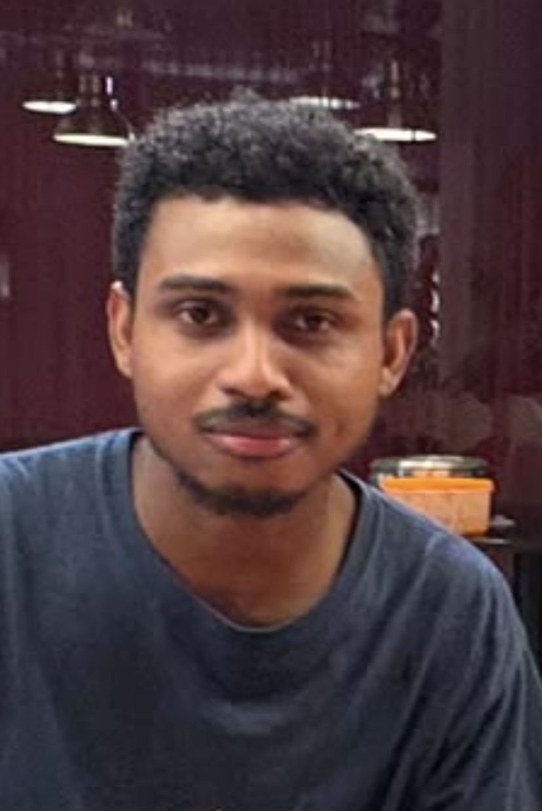

Statistics & Data Science · Climate Dynamics
Cedric Pizina
PhD student in Statistics and Data Science at Clemson University.
About
I am a PhD student in Statistics and Data Science at Clemson University, with an interdisciplinary background in climate physics, mathematical sciences, and hydraulic engineering. My interests lie in climate-data analysis and numerical and statistical modelling.
My research experience spans climate teleconnections, drought variability in Southern Africa, and drinking-water systems in Madagascar. I am interested in connecting physical understanding with statistical methods to study climate and environmental questions.
Selected research
Understanding the IOD–NAO teleconnection in seasonal forecasts
Postgraduate diploma thesis · ICTP · Sep. 2025 – Aug. 2026
I investigated why SEAS5 fails to reproduce the early-winter connection between the Indian Ocean Dipole (IOD) and the North Atlantic Oscillation (NAO). I used partial regression to analyze climate-model output and ran sensitivity experiments with a dry Linear Baroclinic Model to examine the influence of atmospheric mean states.
Drought in Southern Africa under ENSO and IOD influences
MSc project · AIMS South Africa · Mar. – Jun. 2025
I studied the joint effects of El Niño–Southern Oscillation (ENSO) and the Indian Ocean Dipole on Southern Africa’s climate from 1980 to 2023. The project combined CMIP6 projections of precipitation, temperature, and soil moisture through 2100 with machine-learning forecasts of mean trends in the Southern African Drought Index.
Diagnosing Sainte Marie’s drinking-water network
MEng project · University of Antananarivo · Jul. 2023 – May 2024
I led site data collection and diagnostic analysis to investigate operational problems in the drinking-water network of Sainte Marie, Madagascar. I developed an EPANET model to assess system performance and proposed improvements to network efficiency.
Education
- 2026 – Present
-
PhD in Statistics and Data Science · In progress
Clemson University · Clemson, South Carolina
- 2025 – 2026
-
Pre-PhD Diploma in Physics of Climate and Earth System Physics
International Centre for Theoretical Physics · Trieste, Italy
- 2024 – 2025
-
Structured Master’s in Mathematical Sciences
AIMS South Africa / Stellenbosch University · Cape Town, South Africa
- 2022 – 2024
-
Master of Engineering in Hydraulics and Development
École Supérieure Polytechnique d’Antananarivo, University of Antananarivo · Madagascar
- 2018 – 2021
-
Bachelor of Engineering in Hydraulics and Fluid Mechanics
École Supérieure Polytechnique d’Antananarivo, University of Antananarivo · Madagascar
Teaching & professional experience
Lab Instructor, Introduction to Statistical Methods I (STAT 2300)
Clemson University · Aug. 2026 – Present
I conduct weekly laboratory sessions using JMP and grade laboratory assignments.
Junior Hydraulic Engineer
GRET Madagascar · Jul. 2023 – May 2024
I contributed to drinking-water system designs and watershed protection plans for Ambatofotsy and Vinaninony. My work included field measurements of flow, pressure, and water quality, survey development, and on-site quality controls.